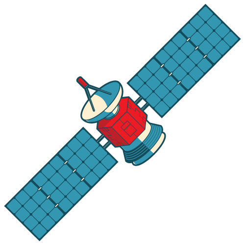

Space Rocks
Asteroids, comets, meteoroids and etc.. are all related to celestial objects and have their own unique characteristics. Here's some information about each of them
Asteroids :
Definition
Asteroids are rocky, airless remnants left over from the early formation of the solar system. They are primarily composed of rock, metal, and sometimes ice.
Location
Most asteroids are found in the asteroid belt, a region located between the orbits of Mars and Jupiter. However, they can also be found in other regions of the solar system, such as near Earth.
Size and Shape
Asteroids vary in size, ranging from small boulders to objects hundreds of kilometers in diameter. They come in different shapes, with some resembling irregular rocks and others having more rounded or elongated shapes.
Impact Hazards
Some asteroids have orbits that bring them close to Earth, posing a potential impact hazard. However, the majority of asteroids are not a threat to our planet.
Comets :
Definition
Comets are icy bodies composed of rock, dust, water ice, and frozen gases. They are often referred to as "dirty snowballs" due to their composition.
Composition
Comets consist of a solid core called a nucleus, which is surrounded by a glowing coma and a tail. The coma is a cloud of gas and dust that forms around the nucleus when the comet approaches the Sun and begins to heat up.
Orbits
Comets have elongated orbits that can take them from the distant reaches of the solar system, such as the Kuiper Belt or the Oort Cloud, to closer regions near the Sun.
Tail Formation
When a comet approaches the Sun, the heat causes the icy nucleus to vaporize, releasing gas and dust into space. Solar radiation and the solar wind then push these materials away from the Sun, forming a glowing coma and a tail that points away from the Sun.
Meteoroids and Meteors :
Definition
Meteoroids are small rocky or metallic objects that orbit the Sun. When a meteoroid enters Earth's atmosphere, it becomes a meteor.
Meteor Showers
Meteoroids that originate from comets or asteroids can create meteor showers when Earth passes through their debris trails. During a meteor shower, many meteors can be observed streaking across the sky.
Shooting Stars
Meteors appear as bright streaks of light in the sky due to the friction and heat generated as they rapidly travel through Earth's atmosphere. They are commonly referred to as "shooting stars."
Space Rocks
Lunar Rocks
Lunar rocks are rocks that originate from the Moon. They are collected during manned or robotic missions to the Moon, such as the Apollo missions. The study of lunar rocks provides insights into the Moon's geological history and its relationship to Earth.
Martian Meteorites
These are meteorites that originated from Mars. They are ejected from the Martian surface due to impacts and eventually make their way to Earth. The study of Martian meteorites helps scientists understand the geology and potential for past life on Mars.
Cometary Dust
Comets, as mentioned earlier, contain a mixture of ice, dust, and rocky material. When comets approach the Sun, they release gas and dust, forming a glowing coma and a tail. The dust particles from comets can be collected and studied to understand the composition and origin of comets.
Interstellar Dust
Interstellar dust refers to tiny particles of solid matter that exist in the space between stars. This dust is composed of various materials, such as carbon compounds, silicates, and metals. Interstellar dust plays a crucial role in the formation of stars and planetary systems.
These space rocks provide valuable insights into the composition, formation, and evolution of celestial bodies within our solar system and beyond. Their study helps us understand the history of our universe and the processes that shape the objects within it
These celestial objects, including asteroids, comets, meteoroids, and the fictional Space Stone, contribute to the dynamic and diverse nature of our solar system and the broader universe. They have captivated human curiosity and are subjects of scientific study and exploration.
